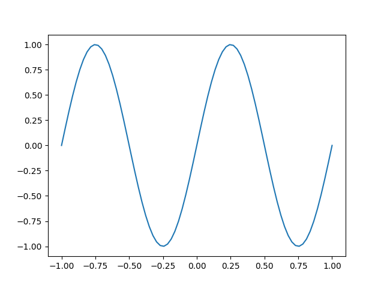

Python Basics
Table of Contents
1. Variables
[Go back to Table of Contents]
1.1. Creating Variables
Values are stored in memory and accessed using variable names. This
is done using the assignment operator, =, using the syntax
<variable_name> = <expression>. <expression> may be a value, such as 5, or
an expression, such as 2 + 3. Some basic examples are shown in Listing
1:
a = 3 # assign the value 3 to variable a b = 5 # assign 5 to variable b print('a+b = {0}'.format(a+b)) c = a - b # evaluate a-b, store in c d = a/b # evaluate a/b, store in d
a+b = 8
Generally, in Python, you won't see variable values unless:
- You are working in a Jupyter Lab notebook.
- In Jupyter, code is entered and evaluated in groups called cells. A cell may contain multiple lines of code.
- In this case, Jupyter will not display any values or graphics, except for the result of the last command in the cell.
- You instruct Python to do so using the
print()command.
Note from the author/instructor: the above code block behaves like a Jupyter cell in the sense that its variables persist and are accessible in other code blocks, so long as those code blocks participate in the same Python session. Code blocks need not be attached to a Python session, in which case they are stand-alone code blocks.
1.2. Displaying Variables
In Listing 1, we print variables from the previous
code block. To do this, we use the print() command, which prints
strings. We either supply to the print() command only a variable (as in
print(a)), or we form strings with variable values embedded in them.
print('hello world') # print a basic string print("hello friend") # print a basic string with alternate delimiters print(a) # print the value of a variable
hello world hello friend 3
Basic usages of print() are shown above in Listing 1. A
more advanced usage is to use f-strings (formatted string literals).
- To make an f-string, prepend
fonto a string definition, as inf'hello world'orf"x = something". - To embed the value of a variable, say,
x, insert{x}in the f-string, as inf"x = {x}" - To format the value of the variable embedded in the f-string, use a
formatting string,
:<formatSpec>. Examples:- Use
:sifxis a string - Use
:m.nfto specify a decimal value with a maximum ofmtotal characters (including a decimal), andndigits of precision to the right of the decimal - Use
:0m.nfas in the previous case, but have leading zeros - Use
:mdto specify an integer representation with a total ofmdigits
- Use
# Make an f-string (fstr) named myFirstfstr # This has variable values embedded within it myFirstfstr = f'c = {c}; d = {d:5.3f}' print(myFirstfstr) # print the f-string myStr = 'cat' # store a string # embed myStr in another string mySecondFStr = f'some word: {myStr}' print(mySecondFStr)
hello world
1.3. Complex Numbers
Here is an example of how Python handles complex numbers. In
Python, we can use 1j for the imaginary unit, \(i\), and, say,
5j for \(5i\).
# Example: complex numbers X = 3 + 2j # complex number absX = abs(X) # print the complex X using an f-string # form the f-string inside of print() print(f'X = {X}; |X| = {absX:06.3f}')
X = (3+2j); |X| = 03.606
We also used abs(X) to obtain the modulus of \(X\).
1.4. Assign Multiple Variables in a Single Line
One neat trick in Python is that we can define several variables using only one assignment statement.
x, y, z = 1+2, 2*3, 4/5 print(f'x = {x}; y = {y}; z = {z:5.3f}')
x = 3; y = 6; z = 0.800
1.5. Variable Types
- Variables come in different types.
- Each variable type–or more generally, class (more on this later)–has a different syntax and behaviors governing what we can do with variables of that type
- We've encountered some different variable types by now:
- strings - store lists of characters, as in text
- integers - (self explanatory)
- floating point numbers (self explanatory)
- complex numbers - (self explanatory)
- We can interrogate the type of a variable, say,
x, using the commandtype(x)
a, b, c, d = 1, 3.14, 2+3j, False print('type of a: {0}'.format(type(a))) print('type of b: {0}'.format(type(b))) print('type of c: {0}'.format(type(c))) print('type of d: {0}'.format(type(d)))
type of a: <class 'int'> type of b: <class 'float'> type of c: <class 'complex'> type of d: <class 'bool'>
1.6. Boolean Variables
- We introdcued another data type:
bool, short for Boolean- Boolean variables have one of two values:
True, orFalse - These may be used to control whether sections of code get executed or skipped, using logical control statements (a.k.a. logical controls)
- Boolean variables have one of two values:
- Boolean variables are typically the result of a comparison
- Comparisons may be performed between pairs of variables or values
- Here, we must use comparison operators such as
<(less than),>(greater than),==(equal to),>=(grater than or equal to),<=(grater than or equal to),!=(not equal to), etc.
- Here, we must use comparison operators such as
- Comparison operators are used to form logical expressions, which
are evaluated as either True or False. Some examples:
- The logical expression
3<5will evaluate toTrue, but3>5will evaluate toFalsea==bmay evaluate either toTrueorFalse, depending on the values stored inaandb.- If the two values are equal, then this statement
evaluates to
True - otherwise, it evaluates to
False
- If the two values are equal, then this statement
evaluates to
- The logical expression
- The value resulting from a logical expression may be:
- stored in a variable, which will be of the type
bool - used in a logical control structure, which determines whether or not a block of code gets executed
- stored in a variable, which will be of the type
- Comparisons may be performed between pairs of variables or values
a = 3 < 5 b = 5 < 3 c, d, f = 3 > 5, 3 < 5, 3==5 print('type of a: {0}; a = {1}'.format(type(a), a)) print('type of b: {0}; b = {1}'.format(type(b), b)) print(f'c = {c}; d = {d}; f = {f}')
type of a: <class 'bool'>; a = True type of b: <class 'bool'>; b = False c = False; d = True; f = False
2. if statements
[Go back to Table of Contents]
ifstatements allow you to execute blocks of code depending on the value of a logical expression- An example of this is shown in Listing 6.
- The basic if statement:
- begins with if
- identifies a variable or condition for evaluation, and
- ends with a colon (
:)
x = True # define a boolean (bool) variable if x: # This doesn't print if x is set to False print('The condition x evaluates as True.') # We could include other commands in the IF block # We only use one command here # Additional commands must have the same indentation # as the print() command print('This is independent of the IF statement.')
The condition x evaluates as True. This is independent of the IF statement.
- We now repeat the code of Listing 6
in Listing 7.
- Here, the
ifstatement is evaluated asFalse(we set it toFalsein line 1), so theprint()command conditioned upon theifis never executed, so we don't see its output.
- Here, the
x = False # define a boolean (bool) variable if x: # This doesn't print if x is set to False print('The condition x evaluates as True.') print('This is independent of the IF statement.')
This is independent of the IF statement.
- Commands subordinate to the if statement follow it and are defined by their indentation. The first line of code with the same indentation as the if statement is outside of the if statement. Unlike other languages, the Python if statement is not defined using an end statement or a closing deliminter, but rather by returning to the level of indentation of the if statement itself.
2.1. if-else Statements
- We can add to an
if SomeExpression:block anelse:block that provides code to be executed if the controlling logical expressionSomeExpressionisFalse- An example of this is given in Listing 8
y = False if y: print('The condition y evaluates as True.') else: print('The condition y evaluates as False.') # The if statement is now over print('This is independent of the IF-ELSE statement.')
The condition y evaluates as False. This is independent of the IF-ELSE statement.
2.2. if-elif-else Statements
- We will use an
if-elif-elsestatement to illustrate the use of theNonevalue - Python's
elifis equivalent to else if or similar constructs in other languages. - See Listing 9
x = None if x is None: y = 100 elif x < 50: y = 200 else: y = 300 # We're outside of the if-elif-else statement now print(f'y = {y}')
y = 100
2.3. None in Logical Expressions
- Here is another example using
is not Noneas the controlling logical expression:
y = True if y is not None: print('y has a value.')
y has a value.
3. Iterables
[Go back to Table of Contents]
- Iterables are variables that contain other variables.
- These are useful for storing multiple related values
- Iterables are so called because they are collections of items over which we may iterate (as, in a for loop, for example)
3.1. Strings
- Strings are iterables.
- A string,
‘cat’, for example, is a collection of characters. - For a string of \(n\) characters, each character can be addressed using an integer index, \(\left\{ 0,1,2,\ldots,n-1\right\}\).
- For a string stored in the variable
X, we reference each element using brackets ([and]) and an integer index,k.
- A string,
X = 'dog' print('The first letter of X is "{0}".'.format(X[0])) print('The second letter of X is "{0}".'.format(X[1]))
The first letter of X is "d". The second letter of X is "o".
- Now, consider a longer string
- We may not necessarily know a priori how long it is
- We can easily address its end element using the index
-1, or the second-to-last character using the index-2 - Additionally, we can reference multiple contiguous elements using a
range,
a:b, with integersaand b.- This returns elements
X[a]throughX[b-1]for a stringX.
- This returns elements
- Examples of additional string indexing are shown in Listing 12
X = 'hello world' # We can find the length of the string using len() print('X contains {0} characters.'.format( len(X) )) # reference from the begining of the string print('first letter of X is "{0}".'.format(X[0])) print('The second letter of X is "{0}".'.format(X[1])) # reference from the end of the string print('The last letter of X is "{0}".'.format(X[-1])) print('The second-to-last letter of X is "{0}".'.format(X[-2])) # slice part of the string a, b = 2, 9 S = X[a:b] print(f'We reference elements {a}:{b}: "{S}"') c, d = -7, -2 R = X[c:d] print(f'We reference elements {c}:{d}: "{R}"')
X contains 11 characters. first letter of X is "h". The second letter of X is "e". The last letter of X is "d". The second-to-last letter of X is "l". We reference elements 2:9: "llo wor" We reference elements -7:-2: "o wor"
3.2. Lists
- Lists are container variables used to contain other variables.
- Lists are flexible in that:
- A single list may contain variables of different types
- A list may contain other lists
- A list of several elements may be defined using brackets ([ and ])
comma-separated elements.
- The elements are indexed with an integer 0, 1, 2, …
- Individual elements may be accessed using brackets and an indexing integer or expression.
- Elements may also be referenced using negative indices:
-1specifies the last element;-2specifies the second-to-last element, etc.
x = 9 # form a list myList = [x, 's', -3, 'cat', [1,2,3]] # print the first element print('The first element is: {0}'.format(myList[0] ) ) # print the second element print('The second element is: {0}'.format(myList[1] ) ) # print the last element print('The last element is: {0}'.format( myList[-1] ) ) # print the second-to-last element print('The second-to-the-last element is: {0}'.format( myList[-2] ) )
The first element is: 9 The second element is: s The last element is: [1, 2, 3] The second-to-the-last element is: cat
3.3. Tuples
- Tuples are like lists.
- They are indexed in the same manner, but tuples are immutable.
- Tuples are defined using parentheses
(and)instead of brackets[and]. - Tuples are useful when you have a collection of variables and you do not want them altered in any way.
x = 9 myTup = (x, 's', -3, 'cat', [1,2,3]) # form a tuple # print the first element print('The first element is: {0}'.format(myTup[0] ) ) # print the second element print('The second element is: {0}'.format(myTup[1] ) ) # print the last element print('The last element is: {0}'.format(myTup[-1] ) ) # print the second-to-last element print('The second-to-the-last element is: {0}'.format( myTup[-2] ) )
The first element is: 9 The second element is: s The last element is: [1, 2, 3] The second-to-the-last element is: cat
3.4. Dicts
- Dict is short for “dictionary”.
- This is like a list, but elements are not indexed by number, but rather using a string.
- The referncing/indexing string is called a key, and the associated element is called a value.
- Thus, a dict contains key-value pairs (KPVs).
- We define a dict using braces { and }
- KVPs are associated using a colon (:), and
- KVPs are separated by a comma
- dicts may be broken up over several lines of code, as can lists and tuples
- Use spaces for readability
- An example of a simple dict definition is given in Listing
someDict = {"a": 3, "b": 'dog', "f": 5.4} """ I used single quotes and double quotes in various places to demonstrate their interchangeability. """ print("someDict['a'] = {0}".format(someDict['a']) ) print("someDict['f'] = {0}".format(someDict["f"]) ) print('someDict["b"] = {0}'.format(someDict['b']) ) # Now I add a value to the dict someDict['d'] = ('New value', 19) # Finally, I show what it looks like to print a dict # and we show the modified dict. print(someDict)
someDict['a'] = 3
someDict['f'] = 5.4
someDict["b"] = dog
{'a': 3, 'b': 'dog', 'f': 5.4, 'd': ('New value', 19)}
- Dicts are mutable: KVPs may be added, removed, or modified.
4. Loops and Iteration
[Go back to Table of Contents]
- Loops help us peform repeated operations over an iterable.
- Iterables include lists, tuples, dicts, and ranges.
4.1. Defining a for loop
- Some key features of a
forloop:- The first line of a
forloop- begins with the keyword
for, - defines an iterator variable, say,
x - provides an iterable, say, the list
X - and ends with a colon (
:)
- begins with the keyword
- Statements to be included in the for loop follow the first line and
are indented by a few spaces more than is the first line
(
for x in X:)- I typically use an indentation of four spaces.
- The first statement with equal or lesser indentation than the
forstatement is recognized by Python to be outside of theforloop.
- The first line of a
- As a first example, I define in Listing 16 a list and then use two statements to print the elements of the list.
X = [1, 'a', (3,2,1), 'fish'] # define a list # use a FOR loop to print the elements of the list for ix in X: print('Element:') # in the loop print(f' {ix}') # in the loop print('The loop has terminated.') # first statement after loop print('Program complete.')
Element: 1 Element: a Element: (3, 2, 1) Element: fish The loop has terminated. Program complete.
4.2. A FOR loop with an index
- Sometimes we don't just want to loop over the elements, but we also want an integer index for each element.
- To do this, we can use
enumerate, as shown in Listing 1
X = [5, 3, 7, 9, 8] Z = [] # empty list for idx, x in enumerate(X): print(f'X[{idx}] = {x}')
X[0] = 5 X[1] = 3 X[2] = 7 X[3] = 9 X[4] = 8
- Notice that Python is a zero-indexed language, where the index starts
at zero.
- This is like C and C++, and many other languages.
- Some languages, such as Matlab or Maple, are one-indexed.
4.3. A FOR loop with Multiple Data Sets
4.3.1. Using a Common Index
- Sometimes we want to use multiple data sets.
- For example, we may want to add the elements of a list
Xto the corresponding elements of another list,Y.- We could use an enumerate object, as before; or,
- we may use a range object to obtain an index to address corresponding elements of the various lists.
- I'll demonstrate the use of a range in Listing 19
- We make a range that starts at 0 and ends at a number just high
enough to capture all the elements of
X. - We also assume that
XandYhave the same number of elements.
- We make a range that starts at 0 and ends at a number just high
enough to capture all the elements of
X = [5, 3, 7, 9, 8] Y = [1, 4, 2, 11, 6] Z = [] # empty list for idx in range(0, len(X)): newZelement = X[idx] + Y[idx] Z.append( newZelement ) # add newZelement to Z print('X[{0}] + Y[{0}] = {1} + {2} = {3}'.format(idx, X[idx], Y[idx], Z[idx]) ) print(Z)
X[0] + Y[0] = 5 + 1 = 6 X[1] + Y[1] = 3 + 4 = 7 X[2] + Y[2] = 7 + 2 = 9 X[3] + Y[3] = 9 + 11 = 20 X[4] + Y[4] = 8 + 6 = 14 [6, 7, 9, 20, 14]
- The loop contains three instructions:
- Add the indexed elements of
XandY, storing this result innewZelement - Append
newZelementtoZ. - Print data so we know it worked properly.
- Add the indexed elements of
- We could combine the first two instructions into one, as in Listing 19:
X = [5, 3, 7, 9, 8] Y = [1, 4, 2, 11, 6] Z = [] # empty list for x,y in zip(X, Y): Z.append( x + y ) # add to Z print('x + y = 0 + 1 = 2'.format( x, y, Z[-1]) ) print(Z)
x + y = 0 + 1 = 2 x + y = 0 + 1 = 2 x + y = 0 + 1 = 2 x + y = 0 + 1 = 2 x + y = 0 + 1 = 2 [6, 7, 9, 20, 14]
4.4. A FOR loop without an index
- We may work with two data lists without making a common index.
- In this technique, we iterate over two lists simultaneously using zip (see Listing 20):
X = [5, 3, 7, 9, 8] Y = [1, 4, 2, 11, 6] Z = [] # empty list for x,y in zip(X, Y): Z.append( x + y ) # add to Z print('x + y = 0 + 1 = 2'.format( x, y, Z[-1]) ) print(Z)
x + y = 0 + 1 = 2 x + y = 0 + 1 = 2 x + y = 0 + 1 = 2 x + y = 0 + 1 = 2 x + y = 0 + 1 = 2 [6, 7, 9, 20, 14]
4.4.1. Coding Exercise
Use zip and a for loop to make Python print each first name and last
name together in pairs on a single line. For example, the first result
should contain Sargon Akkad.
FirstName = ['Sargon', 'Ambrose', 'Joan', 'Augustine'] LastName = ['Akkad', 'Milan', 'Arc', 'Hippo']
4.5. Calculating Data from Members of a List
4.5.1. A Traditional Method
The first method we showcase here is very intuitive: it is the way we
might do this in another language. We start with a list, X, and we
calculate a new list Y, whose elements correspond to the square of the
elements in X:
X = [1, 2, 3, 4] Y = [] # define an empty storage list for x in X: Y.append( x**2 ) print(X) print(Y)
[1, 2, 3, 4] [1, 4, 9, 16]
4.5.2. A More Pythonic Way
A more Pythonic method for calculating Y is to use a list
comprehension. Here, we define a list using the brackets again, [ and
]. Inside the brackets, we include:
- an expression using a
for-loop variable, - the keyword
for - a declaration of the loop variable
x - the keyword
in - the iterable,
X, over which we iterate
It looks like the following:
X = list(range(1,13)) # Form an array of squared values (list comprehension) Y = [x**2 for x in X] print(X) print(Y)
[1, 2, 3, 4, 5, 6, 7, 8, 9, 10, 11, 12] [1, 4, 9, 16, 25, 36, 49, 64, 81, 100, 121, 144]
Notice the syntax for the list comprehension is very English-like: we're
instructing Python to define a list Y whose elements are x**2 (x
squared) for each x in the list X.
5. Binary and Bitwise Operations
[Go back to Table of Contents]
5.1. Convert Integers to Bit Strings
- Python can help us convert integers to bit strings and perform logical operations.
Let's start by converting an integer to a bit string using the
bin()function.for x in range(5): print(bin(x))
0b0 0b1 0b10 0b11 0b100
- The
0.bprefix indicates a binary result.We could remove the
0.busing string slicing:for x in range(5): print(bin(x)[2:])
0 1 10 11 100
We can also add zero padding if we want a fixed number of bits:
for x in range(5): print(bin(x)[2:].zfill(4))
0000 0001 0010 0011 0100
5.2. The Left-Shift and Right-Shift Operations
- We can shift a bit string left or right using the right-shift
>>or left-shift<<operators.
5.2.1. Rightward Shifts
A right-shift basically removes the least significant bit (LSB).
a = 13 print(bin(a)[2:]) # Here are some right shifts. # Think of it as converting to binary and removing the least significant bit print('Right shifts:') for s in range(0,3): print('Dec: {0} >> {1} = {2}; Bin: {0:04b} >> {1} = {2:04b}'\ .format(a, s, a>>s))
1101 Right shifts: Dec: 13 >> 0 = 13; Bin: 1101 >> 0 = 1101 Dec: 13 >> 1 = 6; Bin: 1101 >> 1 = 0110 Dec: 13 >> 2 = 3; Bin: 1101 >> 2 = 0011
5.2.2. Leftward Shifts
- A left-shift operation adds a zero on the right end of the binary word,
shifting all other bits to the left
- This equivalent to a multiplication by 2
- The analogous to this in decimal is the fact that a multiplication by the base (10) means adding a zero on the right end of our decimal number
# Here are some left shifts. # Just like left shifting in base 10 is a multiplication by 10, # in binary (base 2), left-shifting is a multiplication by 2 print('\nLeft shifts:') for s in range(0,3): print('Dec: {0} << {1} = {2}; Bin: {0:04b} << {1} = {2:04b}'\ .format(a, s, a<<s))
Left shifts: Dec: 13 << 0 = 13; Bin: 1101 << 0 = 1101 Dec: 13 << 1 = 26; Bin: 1101 << 1 = 11010 Dec: 13 << 2 = 52; Bin: 1101 << 2 = 110100
- We show more left shifts:
# Here are more shifts. # Think of it as converting to binary and removing the least significant bit b=1 print('\nMore left shifts:') for s in range(0,3): print('Dec: {0} << {1} = {2}; Bin: {0:04b} << {1} = {2:04b}'\ .format(b, s, b<<s))
More left shifts: Dec: 1 << 0 = 1; Bin: 0001 << 0 = 0001 Dec: 1 << 1 = 2; Bin: 0001 << 1 = 0010 Dec: 1 << 2 = 4; Bin: 0001 << 2 = 0100
5.3. Bitwise AND, OR, and XOR (Exclusive OR)
- We demonstrate the use of bitwise logical operations
- These work on a pair of integers
- Consider the integers 2 and 3, which are 0b10 and 0b11 in binary
2 & 3returns the bitwise AND of 0b10 and 0b11, which is 0b10 = 22 | 3returns the bitwise OR of 0b10 and 0b11, which is 0b11 = 32 ^ 3returns the bitwise XOR of 0b10 and 0b11, which is 0b01 = 1
f, g = 9, 12 print('Bitwise AND (&)\n Dec: {0} & {1} = {2};\n Bin: {0:04b} & {1:04b} = {2:04b}'\ .format(g, f, f & g)) print('Bitwise OR (|)\n Dec: {0} | {1} = {2};\n Bin: {0:04b} | {1:04b} = {2:04b}'\ .format(g, f, f | g)) print('Bitwise XOR (^)\n Dec: {0} ^ {1} = {2};\n Bin: {0:04b} | {1:04b} = {2:04b}'\ .format(g, f, f ^ g))
Bitwise AND (&) Dec: 12 & 9 = 8; Bin: 1100 & 1001 = 1000 Bitwise OR (|) Dec: 12 | 9 = 13; Bin: 1100 | 1001 = 1101 Bitwise XOR (^) Dec: 12 ^ 9 = 5; Bin: 1100 | 1001 = 0101
6. numpy: Numerical Python Tools
[Go back to Table of Contents]
- Until now, we have leveraged only standard Python tools.
numpy(short for Numerical Python) is a Python package that extends the capabilities of standard Python to support various numerical analyses including linear algebra- To use
numpy, we must first import it. It is customary to use the shortcut
npfor =numpy when importing itimport numpy as np
6.1. Define Vectors
# now we can use np to define a vector (by default, a list, neither row nor column) a = np.array([1, 2, 3, 4, 5, 6]) print('The shape of a is: {0}'.format( a.shape ) ) print(a) print(type(a)) # what is it? print('Length of a: {0} (there are {0} elements)'.format(len(a))) # what is the length of a?
The shape of a is: (6,) [1 2 3 4 5 6] <class 'numpy.ndarray'> Length of a: 6 (there are 6 elements)
- Notice that when we print
a, it looks like a Python list (no commas, however). - We can add a row dimension or a column dimension to make a matrix that has either only a row or a column
6.1.1. Indexing
We can refer to the \(k\)-th element of \(a\) using the following syntax:
print('First element of a: {0}'.format(a[0])) print('Second element of a: {0}'.format(a[1])) print('Last element of a: {0}'.format(a[-1])) print('Slice of a: {0}'.format(a[2:4])) print('Another slice of a: {0}'.format(a[-3:-1]))
First element of a: 1 Second element of a: 2 Last element of a: 6 Slice of a: [3 4] Another slice of a: [4 5]
6.1.2. A Column Vector
To transform our
numpyarrayainto column vector, we add a new axis:acol = a[:, np.newaxis] print('The shape of acol is: {0}'.format( acol.shape ) ) print(acol) print(type(acol)) # what is it? print('Length of acol: {0}'.format(len(acol))) # what is the length of a?
The shape of acol is: (6, 1) [[1] [2] [3] [4] [5] [6]] <class 'numpy.ndarray'> Length of acol: 6
- Now we see that our column matrix is an
np.array()object acollooks like a list of one-element lists.Let's ask for the 3rd element of acol:
print(acol[2]) print(type(acol[2]))
[3] <class 'numpy.ndarray'>
It's still an array. We can slice again:
print(acol[2][0]) print(type(acol[2][0]))
3 <class 'numpy.int64'>
6.1.3. A Row Vector
To transform our
numpyarrayainto row vector, we add a new axis:arow = a[np.newaxis,:] print('The shape of arow is: {0}'.format( arow.shape ) ) print(arow) print('Length of arow: {0}'.format(len(arow))) # what is the length of a?
The shape of arow is: (1, 6) [[1 2 3 4 5 6]] Length of arow: 1
- Our row matrix is an
np.array()object arowlooks like a list containing a single listThe only valid element of arow is
arow[0], which is the first and only row ofarow:print(arow[0])[1 2 3 4 5 6]
- Thus, we must be careful when using the length (
len()) function- There's only one row in arow, but overall, six elements.
- Our row matrix is an
Combining our observations, we can say that by default, Python's
numpy.array()is a row-major system- We think of a matrix as a list of lists
- the interior lists are rows, and
- the exterior list stacks those rows to
form a 2D
numpy.array()object.
# define a b vector for future use b = np.array([7, -8, 9, -10, -11, 12]) bcol = b[:, np.newaxis] # column vector brow = b[np.newaxis, :] # row vector
- We think of a matrix as a list of lists
6.1.4. Defining Matrices
Define matrices using lists of lists, and then providing the composite list to
np.array().M = np.array([[1, 2, 3], [4, 5, 6], [7, 8, 9]]) print(M) print('Shape of M: {0}'.format(M.shape))
[[1 2 3] [4 5 6] [7 8 9]] Shape of M: (3, 3)
We get the \((j,k)\) element by indexing as
M[j][k]orM[j,k].print(M[2][1]) print(M[2,1])
8 8
Here are two ways to get the second row of
M:print(M[1,:]) # (second row, cleaner) print(type(M[1,:])) print(M[1]) # (second row, cleaner still) print(type(M[1]))
[4 5 6] <class 'numpy.ndarray'> [4 5 6] <class 'numpy.ndarray'>
Similarly, we can get the third column of
M:print(M[:,2]) # (second row, cleaner) print(type(M[:,2]))
[3 6 9] <class 'numpy.ndarray'>
6.1.5. Random Matrix of Integers
We can use
numpy.random.randintto obtain a randomized matrix:from numpy.random import randint r, c = 3, 5 # rows, columns minInt, maxInt = -5, 5 # min and max for integer values Mrand = randint(minInt, maxInt, [r,c]) print(Mrand)
[[-3 1 2 3 2] [-1 2 -2 0 -2] [ 2 -3 -4 2 2]]
6.1.6. Random Complex Matrices
Here is one way to make a randomized matrix of complex values:
r, c = 3, 5 # rows, columns minInt, maxInt = -5, 5 # min and max for integer values Mrand = randint(minInt, maxInt, [r,c]) \ + 1j*randint(minInt, maxInt, [r,c]) # imaginary part print(Mrand)
[[ 2.-4.j 4.+0.j 4.+3.j 3.+4.j 3.+2.j] [ 2.+0.j 2.-2.j 2.+1.j 3.+2.j 0.+3.j] [-4.+0.j 2.+2.j 3.-5.j -3.-5.j -3.-3.j]]
6.2. Matrix and Vector Operations
6.2.1. Vector Addition and Subtraction
# Add vectors d = a + b print(f'd is {d}') print(f'\na - b is {a-b}')
d is [ 8 -6 12 -6 -6 18] a - b is [-6 10 -6 14 16 -6]
6.2.2. Scalar Multiplication
print(f'arow = {arow}') print(f'2*arow = {2*arow}')
arow = [[1 2 3 4 5 6]] 2*arow = [[ 2 4 6 8 10 12]]
6.2.3. Complex Vectors
''' Use 1j for the imaginary unit. Use 7j for 7*1j. ''' # complex vectors f = acol - 1j*bcol # complex vector print(f'f is:\n{f}')
f is: [[1. -7.j] [2. +8.j] [3. -9.j] [4.+10.j] [5.+11.j] [6.-12.j]]
- Conjugate Transpose (Hermitian Conjugate)
# f.T transposes f # f_dagger = f.T.conjugate() print(f'f is:\n{f}') print(f'\nf_dagger is:\n{f_dagger}')
f is: [[1. -7.j] [2. +8.j] [3. -9.j] [4.+10.j] [5.+11.j] [6.-12.j]] f_dagger is: [[1. +7.j 2. -8.j 3. +9.j 4.-10.j 5.-11.j 6.+12.j]]
- A
dag()Function
- You might get lay (efficient) and want to write a function to help you do the Hermitian conjugate
This can actually save you time and effort in the long run, as well as avoid mistakes:
def dag(M: np.ndarray) -> np.ndarray: """ Compute the Hermitian conjugate (dagger) of a matrix. Parameters: M (ndarray): A NumPy array representing the matrix. Returns: ndarray: The Hermitian conjugate of the input matrix. """ return M.T.conjugate() print(f'\nf is: {f}') print(f'\nf_dagger is: {dag(f)}')
f is: [[1. -7.j] [2. +8.j] [3. -9.j] [4.+10.j] [5.+11.j] [6.-12.j]] f_dagger is: [[1. +7.j 2. -8.j 3. +9.j 4.-10.j 5.-11.j 6.+12.j]]
- A
- Inner Product
- Real Vectors
# inner product of lists a_dot_b = np.dot(a, b) # dot() operation print(f'dot(a, b) = {a_dot_b}') # it's a scalar # inner product of vectors - inner dimensions must match a_dot_b_v01 = np.dot(arow, bcol) # dot() operation print(f'\ndot(arow, bcol) = {a_dot_b_v01}') # it's a scalar # matrix multiply a_dot_b_v01 = arow @ bcol # linear algebra print('\narow @ bcol = {0}'.format(a_dot_b_v01)) # it's a 1x1 matrix
dot(a, b) = -5 dot(arow, bcol) = [[-5]] arow @ bcol = [[-5]]
Careful:
*with two vectors is an element-wise multiplication.For matrix or vector multiplication, use the
@operator.a_mult_b = a * b # element-wise multiplication print(a_mult_b)
[ 7 -16 27 -40 -55 72]
- Complex Vectors
# inner product of lists def random_complex_vector( dim :int, min_int:int = -5, max_int:int = 5) -> np.ndarray: """Generate a vector of randomized complex values. Args: dim (int): Dimension of the vector. Defaults to 2. min_int (int): Minimum integer value for the real and imaginary parts. Defaults to -5. max_int (int): Maximum integer value for the real and imaginary parts. Defaults to 5. Returns: ndarray: A vector of shape (dim, 1) containing complex values. """ return randint(minInt, maxInt, [dim,1]) \ + 1j*randint(minInt, maxInt, [dim,1]) X = random_complex_vector( 3 ) Y = random_complex_vector( 3 ) print(f'\nX = {X}') print(f'\nY = {Y}') print(f'\nX @ Y = { dag(X) @ Y }') print(f'\nnp.dot( dag(X), Y ) = { np.dot( dag(X), Y )}') print(f'\nY @ X = { dag(Y) @ X }') print(f'\nnp.dot( dag(Y), X ) = { np.dot( dag(Y), X )}')
X = [[2.-2.j] [0.+3.j] [2.-3.j]] Y = [[-4.-4.j] [ 0.-4.j] [ 0.-1.j]] X @ Y = [[-9.-18.j]] np.dot( dag(X), Y ) = [[-9.-18.j]] Y @ X = [[-9.+18.j]] np.dot( dag(Y), X ) = [[-9.+18.j]]
- Observations:
- To get the inner product correct, we need to apply the Hermitian conjugate
of the first vector and then use the matrix multiplication (
@) ornp.dot(). - This gets us the proper result: \(\vec{X} \cdot \vec{Y} = \left(\vec{Y} \cdot \vec{X} \right)^{\ast}\)
- To get the inner product correct, we need to apply the Hermitian conjugate
of the first vector and then use the matrix multiplication (
We could get lazy (smart, efficient) and make our own inner product function:
# inner product of lists def inner_product( W: np.ndarray, V: np.ndarray ) -> np.ndarray: """Calculate the inner (scalar) product Generate a vector of randomized complex values. Args: W (np.ndarray): first vector V (np.ndarray): second vector Returns: np.ndarray: the inner product of W and V. """ return dag(W) @ V N = 5 X = random_complex_vector( N ) Y = random_complex_vector( N ) print(f'\nX = {X}') print(f'\nY = {Y}') print(f'\nX @ Y = { inner_product(X, Y) }') print(f'\nY @ X = { inner_product(Y, X) }')
X = [[ 2.-3.j] [-1.-5.j] [ 0.+2.j] [ 1.+0.j] [-2.+3.j]] Y = [[-5.+2.j] [-1.-5.j] [ 1.+1.j] [ 4.+1.j] [-5.-3.j]] X @ Y = [[17.+9.j]] Y @ X = [[17.-9.j]]
- Observations:
- Real Vectors
7. Basic Plotting using matplotlib
- For plotting capabilities, we may use the
matplotliblibrary - It is customary to import
pyplot, the plotting features ofmatplotlib, asplt:
print('test')
None
7.1. Basic Plots
- Now, we may make some data vectors for plotting:
π = np.pi nx = 75 x = np.linspace(-1, 1, nx) y1 = np.sin( 2*π*x ) y2 = np.cos( 2*π*x )
To plot these:
- First create a figure and axes object using the
subplots()command - Then, use
plt.plot(x, y)
fig, ax = plt.subplots() plt.plot(x, y1) # if using Jupyter, uncomment the following to show the plot # plt.show()
To save the figure in a file, use plt.savefig( filename ) to save the figure
as an image
import os figname = os.path.join('html', 'img', 'sinePlot.png') plt.savefig( figname )

Figure 1: A simple matplotlib plot.
We may wish to conserve memory by closing any open plots using the
close("all") command:
This plot requires several improvements
7.1.1. An Improved Plot
Improvements we will make here:
- Have multiple datasets, with a legend
- Add an \(x\)-label
- To use LaTeX, we use a raw string with LaTeX syntax deliniated using the
dollar sign,
$
- To use LaTeX, we use a raw string with LaTeX syntax deliniated using the
dollar sign,
fig, ax = plt.subplots() plt.plot(x, y1, label='sine') plt.plot(x, y2, label='cosine') ax.set_xlabel(r'$x$', fontsize=16) plt.grid( True ) plt.legend() plt.tight_layout() # if using Jupyter, uncomment the following to show the plot # plt.show()
- To save the figure in an image file:
import os figname = os.path.join('html', 'img', 'sincosPlot.png') plt.savefig( figname ) plt.close("all")
Figure 2: Default caption.